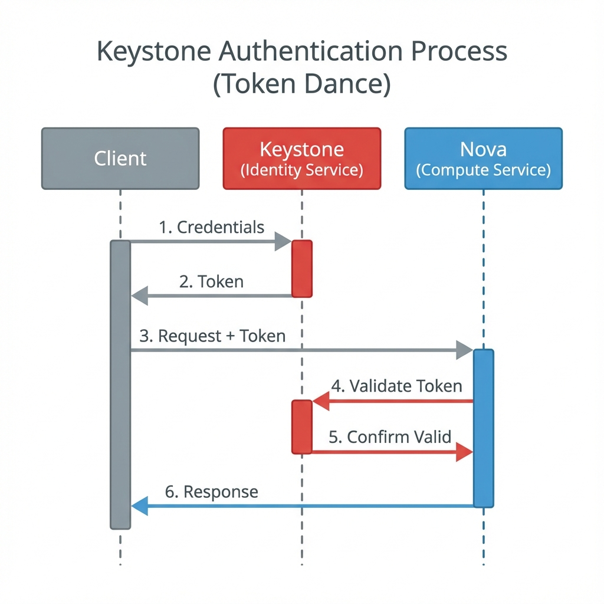
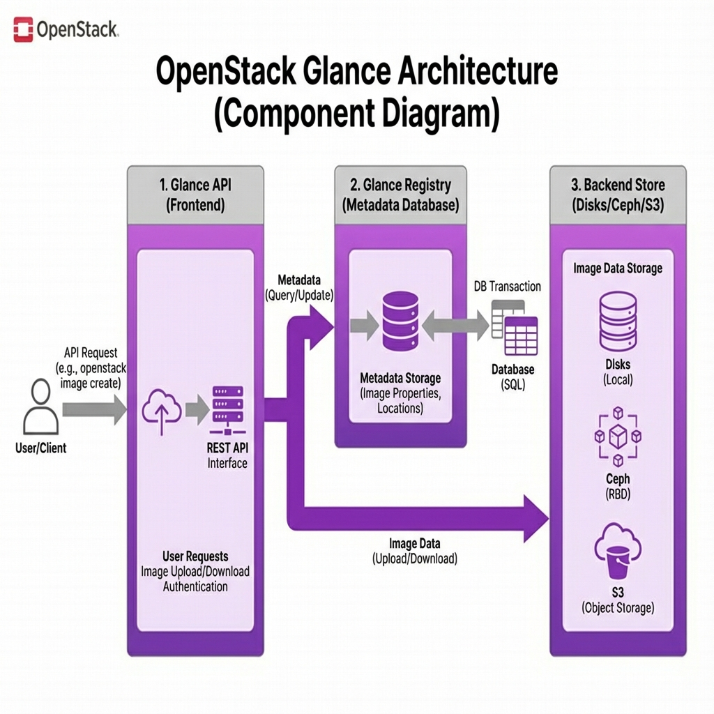
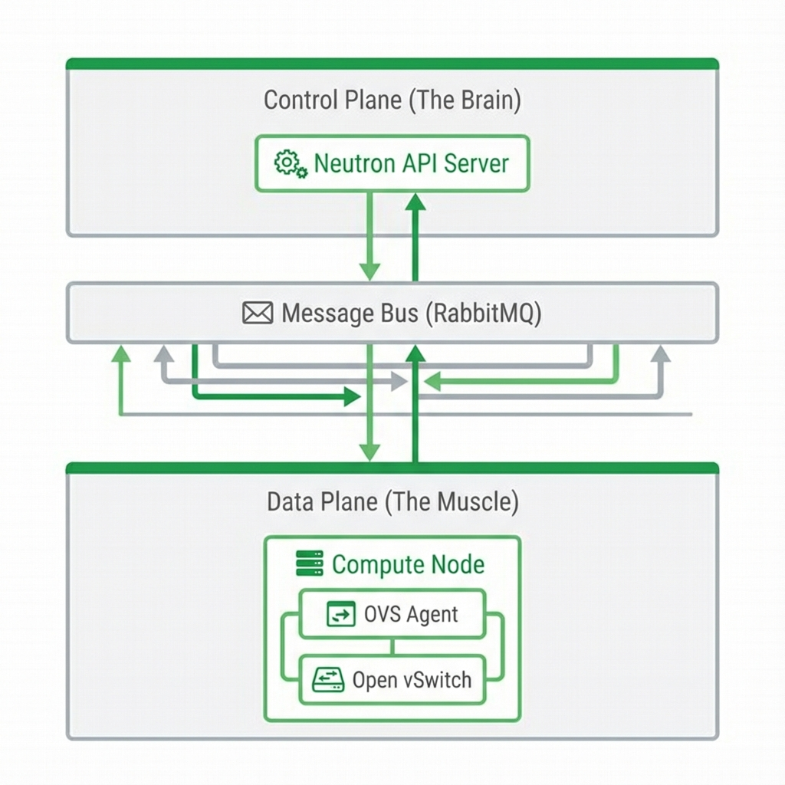
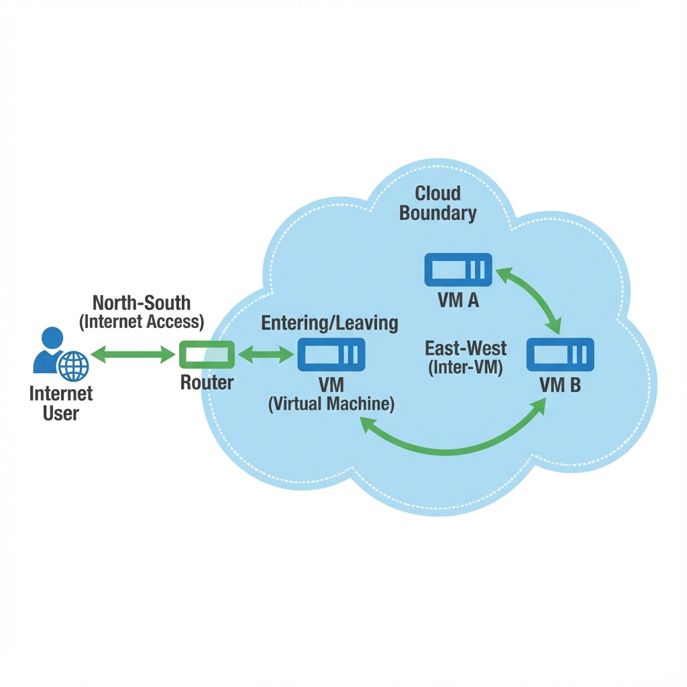

Course: Computer Systems Engineering Module: Operating Systems 3 (Virtualisation & Cloud Technologies) Topic: Cloud Foundation (OpenStackOpen-source cloud computingComputing services delivered over the internet 📖 platform 📖) Estimated Reading Time: 25 Minutes
[!TIP] How to succeed in this week: OpenStackOpen-source cloud computingComputing services delivered over the internet 📖 platform 📖 is complex, but it's just virtualizationThe creation of virtual versions of physical computing resources 📖 at scale with an APIApplication Programming Interface 📖. Map each OpenStackOpen-source cloud computingComputing services delivered over the internet 📖 platform 📖 service to concepts you already know (NovaOpenStackOpen-source cloud computingComputing services delivered over the internet 📖 platform 📖 compute service for VMs 📖=VMs, NeutronOpenStackOpen-source cloud computingComputing services delivered over the internet 📖 platform 📖 networking service 📖=Networking, etc.). The architecture diagram is your roadmap.
Welcome to Week 8!
1. Case Study: The "Nebula Inc." Startup
To understand how a cloud is built, we will follow a continuous scenario for the next three weeks. You have been hired as the Lead Cloud Engineer for a new software startup called "Nebula Inc." Currently, they have no infrastructure—just a credit card and a dream. Your job is to build their Virtual Data Center (VDC) from scratch using OpenStackOpen-source cloud computingComputing services delivered over the internet 📖 platform 📖. This is not a theoretical exercise; you will be typing the actual commands that cloud administrators use daily to construct the digital fabric of the modern internet.
The Roadmap:
- Week 8 (Foundation): You must create the secure environment. This involves setting up the company's "TenantGrouping of users and resources (also called Project) 📖" (Project), hiring the staff (Users), purchasing the software licenses (Images), and cabling the office (Networking).
- Week 9 (Compute): You will deploy their first web servers and secure them with firewalls.
- Week 10 (Storage): You will attach persistent storage for their customer database.
By the end of this module, you will have a fully functional, multi-tier cloud application environment running on infrastructure you defined yourself.
2. Deep Dive: Identity Management (KeystoneOpenStackOpen-source cloud computingComputing services delivered over the internet 📖 platform 📖 identity/authentication service 📖)
KeystoneOpenStackOpen-source cloud computingComputing services delivered over the internet 📖 platform 📖 identity/authentication service 📖 is the central nervous system of OpenStackOpen-source cloud computingComputing services delivered over the internet 📖 platform 📖. If KeystoneOpenStackOpen-source cloud computingComputing services delivered over the internet 📖 platform 📖 identity/authentication service 📖 is down, nothing works. It is responsible for Authentication (AuthN - "Who are you?") and Authorization (AuthZ - "What can you do?"). In a physical building, KeystoneOpenStackOpen-source cloud computingComputing services delivered over the internet 📖 platform 📖 identity/authentication service 📖 is the security guard at the front desk who checks your ID badge and decides which floors you are allowed to visit.
2.1 The Authentication Workflow (The "Token Dance")
When you run a command like openstack server list, a complex sequence of events, often
called the "Token Dance," occurs in the background before you see any output.
 Figure 1: The KeystoneOpenStackOpen-source cloud computingComputing services delivered over the internet 📖 platform 📖 identity/authentication service 📖 "Token Dance" - Documenting the 7-step process of authentication and authorization
- Credentials: Your client (CLICommand Line Interface 📖 or HorizonOpenStackOpen-source cloud computingComputing services delivered over the internet 📖 platform 📖 web dashboard 📖) sends your Username, Password, and Domain to the KeystoneOpenStackOpen-source cloud computingComputing services delivered over the internet 📖 platform 📖 identity/authentication service 📖 APIApplication Programming Interface 📖.
- Validation: KeystoneOpenStackOpen-source cloud computingComputing services delivered over the internet 📖 platform 📖 identity/authentication service 📖 validates these credentials against its Backend (SQL or LDAP).
- Token Issue: If the credentials are valid, KeystoneOpenStackOpen-source cloud computingComputing services delivered over the internet 📖 platform 📖 identity/authentication service 📖 generates a Token (a temporary digital ID card) and sends it back to you.
- Service Request: The client then sends the actual request to NovaOpenStackOpen-source cloud computingComputing services delivered over the internet 📖 platform 📖 compute service for VMs 📖
(
GET /servers), placing the Token in the HTTP Header (X-Auth-Token) as proof of identity. - Token Validation: NovaOpenStackOpen-source cloud computingComputing services delivered over the internet 📖 platform 📖 compute service for VMs 📖 does not trust you or your token blindly. It authenticates the token by sending it back to KeystoneOpenStackOpen-source cloud computingComputing services delivered over the internet 📖 platform 📖 identity/authentication service 📖 with the question: "Is this token valid?"
- Confirmation: KeystoneOpenStackOpen-source cloud computingComputing services delivered over the internet 📖 platform 📖 identity/authentication service 📖 validates the token's signature and expiry in its database. It replies to NovaOpenStackOpen-source cloud computingComputing services delivered over the internet 📖 platform 📖 compute service for VMs 📖: "Yes, this is valid. The user is 'admin' and has the 'member' role."
- Execution: Once confirmed, NovaOpenStackOpen-source cloud computingComputing services delivered over the internet 📖 platform 📖 compute service for VMs 📖 finally executes the command and returns the server list.
2.2 The Backend (Where are users stored?)
KeystoneOpenStackOpen-source cloud computingComputing services delivered over the internet 📖 platform 📖 identity/authentication service 📖 is modular and capable of integrating with existing enterprise systems. It can store users locally or talk to external systems:
- SQL (Local): Users are stored in the OpenStackOpen-source cloud computingComputing services delivered over the internet 📖 platform 📖 database (MariaDB). This is the standard configuration for small deployments and our lab environment.
- LDAP / Active Directory (Enterprise): In large enterprises, you do not want to create separate accounts for every system. KeystoneOpenStackOpen-source cloud computingComputing services delivered over the internet 📖 platform 📖 identity/authentication service 📖 can plug directly into the corporate Active Directory. When a user logs in, KeystoneOpenStackOpen-source cloud computingComputing services delivered over the internet 📖 platform 📖 identity/authentication service 📖 forwards the password to the Domain Controller for validation, ensuring Single Sign-On (SSO).
2.3 Token Providers (Fernet vs UUID)
The format of the token itself determines the performance of the cloud.
- UUID (Legacy): A random string stored in the KeystoneOpenStackOpen-source cloud computingComputing services delivered over the internet 📖 platform 📖 identity/authentication service 📖 Database. The problem with this method is that every validation requires a Database Lookup. In massive clouds handling 10,000 requests per second, this would crush the database.
- Fernet (Modern): A cryptographic token format. The token contains the User ID and Expiry Time, encrypted using a secret key held by the KeystoneOpenStackOpen-source cloud computingComputing services delivered over the internet 📖 platform 📖 identity/authentication service 📖 server. The major benefit is that KeystoneOpenStackOpen-source cloud computingComputing services delivered over the internet 📖 platform 📖 identity/authentication service 📖 does not need to store the token in a database. To validate it, it simply decrypts the token significantly reducing database load and allowing KeystoneOpenStackOpen-source cloud computingComputing services delivered over the internet 📖 platform 📖 identity/authentication service 📖 to scale infinitely.
2.4 The Hierarchy
- Domain: A high-level containerLightweight package with app code and dependencies 📖 (e.g., "Default" or "Corporate_A"). Use for multi-tenantGrouping of users and resources (also called Project) 📖 isolation.
- Project (TenantGrouping of users and resources (also called Project) 📖): The workspace. Resources (VMs, Networks) belong to a Project.
- User: The human or service account.
- Role: The permission set. A User must have a Role on a Project to do anything.
2.5 CLICommand Line Interface 📖 Implementation (Case Study: Nebula Inc.)
Now we apply this theory to our startup. "Nebula Inc." requires a dedicated, isolated environment where its developers can work without interfering with other departments. In OpenStackOpen-source cloud computingComputing services delivered over the internet 📖 platform 📖, we achieve this "Multi-TenancySingle instance serving multiple customers 📖" by creating a specific Project. This project will act as the containerLightweight package with app code and dependencies 📖 for all their future VMs, networks, and storage volumes. It also allows us to set quotas (e.g., "Maximum 10 CPUs") to control their budget.
Step 1: Create the Project
openstack project create --domain default --description "Nebula Inc. Production" nebula_prod
- Explanation:
--domain default: Specifies that this project lives in the default domain.--description: Metadata for admins.- Result: Creates a record in the
projectstable. Returns a UUID (e.g.,a1b2c3...).
Step 2: Create the User
openstack user create --domain default --password-prompt nebula_admin
- Explanation:
--password-prompt: Hides input for security.- Result: Creating a user identity does NOT grant access. The user is currently "unemployed".
Step 3: Assign the Role
openstack role add --project nebula_prod --user nebula_admin member
- Explanation:
member: The standard permission level (can create VMs/Networks but cannot delete other users).- Result: Creates a row in the
role_assignmentstable linking User+Project+Role.
2.6 Identity Verification & Management
In a production cloud, security is an ongoing process, not a one-time setup. The "Principle of Least Privilege" dictates that we must continuously verify that only the correct people have access to our sensitive data. Simply listing the users in the system is insufficient; a user might exist but have no access to anything. To audit this, we must inspect the Role Assignments.
Auditing Access
openstack role assignment list --user nebula_admin --names
- Explanation:
--names: Resolves UUIDs to human-readable names.- Result: Displays exactly which project the user can access and with what level of authority.
Managing Users
-
Disabling a User:
bash openstack user set --disable nebula_admin- Explanation: Sets
enabled=Falsein the DB. The user cannot request new tokens.
- Explanation: Sets
Section 2 Checkpoint
Summary:
- KeystoneOpenStackOpen-source cloud computingComputing services delivered over the internet 📖 platform 📖 identity/authentication service 📖: The core authentication and authorization service; without it, nothing works.
- Fernet Tokens: Modern, stateless tokens that improve performance by removing database lookups.
- Role Assignments: The critical link that grants a User permission on a Project.
Reflection: 1. Why do we use tokens (like Fernet) instead of just passing the username/password to every service? (Hint: Performance and Security). 2. If you delete a user, their history disappears. If you disable them, it remains. Why is this important for audit trails?
Resources:
3. Deep Dive: Image Management (GlanceOpenStackOpen-source cloud computingComputing services delivered over the internet 📖 platform 📖 image service 📖)
Every Virtual MachineA software-based emulation of a physical computer 📖 needs a hard drive to boot from. In the physical world, you might walk around with a USB stick containing a Windows or Linux ISO installer. In the cloud, this is inefficient. Instead, we use GlanceOpenStackOpen-source cloud computingComputing services delivered over the internet 📖 platform 📖 image service 📖, the OpenStackOpen-source cloud computingComputing services delivered over the internet 📖 platform 📖 Image Service. GlanceOpenStackOpen-source cloud computingComputing services delivered over the internet 📖 platform 📖 image service 📖 acts as a central library where validated, pre-installed operating system templates are stored. When you launch a VMVirtual MachineA software-based emulation of a physical computer 📖 - A software-based emulation of a physical computer 📖, NovaOpenStackOpen-source cloud computingComputing services delivered over the internet 📖 platform 📖 compute service for VMs 📖 contacts GlanceOpenStackOpen-source cloud computingComputing services delivered over the internet 📖 platform 📖 image service 📖 to request a copy of the "Master Image" to be streamed to the hypervisorSoftware that creates and manages virtual machines 📖.
3.1 Understanding Disk Formats
Not all virtual disks are created equal. You must choose the right format for your cloud workload:
RAW is a bit-for-bit copy of the disk. It offers the fastest performance because there is no overhead, but it is space-inefficient. A 10GB drive takes up 10GB of physical space, even if it is empty, making it slow to copy over the network.
QCOW2QEMUQuick Emulator - Works with KVMKernel-based Virtual MachineA software-based emulation of a physical computer 📖 - A HypervisorSoftware that creates and manages virtual machines 📖" class="glossary-term">Type 1 hypervisorSoftware that creates and manages virtual machines 📖A bare-metal hypervisorSoftware that creates and manages virtual machines 📖 that runs directly on hardware 📖 📖 for virtualizationThe creation of virtual versions of physical computing resources 📖 📖 Copy-On-Write disk image format 📖 (QEMUQuick Emulator - Works with KVMKernel-based Virtual MachineA software-based emulation of a physical computer 📖 - A HypervisorSoftware that creates and manages virtual machines 📖" class="glossary-term">Type 1 hypervisorSoftware that creates and manages virtual machines 📖A bare-metal hypervisorSoftware that creates and manages virtual machines 📖 that runs directly on hardware 📖 📖 for virtualizationThe creation of virtual versions of physical computing resources 📖 📖 Copy On Write) is the standard format for OpenStackOpen-source cloud computingComputing services delivered over the internet 📖 platform 📖. It supports compression and "Thin Provisioning," meaning a 10GB drive with only 100MB of data takes up only 100MB of physical space. Crucially, it logic enables snapshotPoint-in-time copy of VMVirtual MachineA software-based emulation of a physical computer 📖 - A software-based emulation of a physical computer 📖 state for rollback 📖 capabilities, allowing you to save the state of a VMVirtual MachineA software-based emulation of a physical computer 📖 - A software-based emulation of a physical computer 📖 instantly.
ISO is a read-only archive used for installation media. While essential for building images, it is rarely used in cloud "boot-from-image" scenarios because we prefer pre-installed operating systems.
3.2 GlanceOpenStackOpen-source cloud computingComputing services delivered over the internet 📖 platform 📖 image service 📖 Architecture
GlanceOpenStackOpen-source cloud computingComputing services delivered over the internet 📖 platform 📖 image service 📖 is split into distinct components to separate the metadata from the actual data payload.
 Figure 2: GlanceOpenStackOpen-source cloud computingComputing services delivered over the internet 📖 platform 📖 image service 📖 Architecture - The separation of the APIApplication Programming Interface 📖, Registry (Metadata), and Backend Store (Data)
- GlanceOpenStackOpen-source cloud computingComputing services delivered over the internet 📖 platform 📖 image service 📖 APIApplication Programming Interface 📖: The front-end service that accepts user requests (e.g., "Upload this image", "List images"). It verifies the user's token with KeystoneOpenStackOpen-source cloud computingComputing services delivered over the internet 📖 platform 📖 identity/authentication service 📖 before proceeding.
- GlanceOpenStackOpen-source cloud computingComputing services delivered over the internet 📖 platform 📖 image service 📖 Registry: An internal service that stores the metadata about images (Name, Size, Format, Owner) in the SQL database.
- Backend Store: The driver responsible for storing the actual binary data
(the heavy bits). While this can be a local file system (
/var/lib/glance), production clouds typically use a distributed storage clusterGroup of servers working together 📖 like CephDistributed storage system for object/block/file storage 📖 or an object store like AWS S3 to ensure data durability and accessibility across all compute nodes.
3.3 CLICommand Line Interface 📖 Implementation (Case Study: Nebula Inc.)
For any software company, consistency is key. We cannot have one developer running Ubuntu 20.04 and another running Fedora 35, as this leads to the infamous "it works on my machine" problem. To solve this, Nebula Inc. enforces a Standard Operating Environment (SOE). We will upload a "Golden Image"—a pre-approved, security-hardened operating system templatePre-configured VMVirtual MachineA software-based emulation of a physical computer 📖 - A software-based emulation of a physical computer 📖 image for quick deployment 📖 that all staff must use. For our initial testing phase, we will utilize CirrOS, a lightweight (15MB) Linux distribution designed specifically for validating OpenStackOpen-source cloud computingComputing services delivered over the internet 📖 platform 📖 clouds, before graduating to full-sized Ubuntu Server images in production.
Step 1: Download the Source
wget http://download.cirros-cloud.net/0.5.1/cirros-0.5.1-x86_64-disk.img
- Explanation: We assume we are on the "Jumpbox" or Controller node. Browsers cannot upload directly to GlanceOpenStackOpen-source cloud computingComputing services delivered over the internet 📖 platform 📖 image service 📖 CLICommand Line Interface 📖; the file must exist locally.
Step 2: Upload to GlanceOpenStackOpen-source cloud computingComputing services delivered over the internet 📖 platform 📖 image service 📖
openstack image create "nebula_standard_os" \
--file cirros-0.5.1-x86_64-disk.img \
--disk-format qcow2 \
--container-format bare \
--public \
--min-ram 64 \
--min-disk 1
- Explanation:
--disk-format qcow2: Defines how the bits are organized.--container-format bare: Indicates no extra metadata wrapper (OVF) is around the file.--public: IMPORTANT. By default, images are "Private" (only visible to the uploader). This flag makes it visible to all projects in the cloud (Nebula, Admin, Testing, etc.).--min-ram 64: A metadata tag. NovaOpenStackOpen-source cloud computingComputing services delivered over the internet 📖 platform 📖 compute service for VMs 📖 checks this before booting. If a user tries to launch this on a FlavorVMVirtual MachineA software-based emulation of a physical computer 📖 - A software-based emulation of a physical computer 📖 templatePre-configured VMVirtual MachineA software-based emulation of a physical computer 📖 - A software-based emulation of a physical computer 📖 image for quick deployment 📖 defining vCPUs, RAM, and disk 📖 with 32MB RAM, NovaOpenStackOpen-source cloud computingComputing services delivered over the internet 📖 platform 📖 compute service for VMs 📖 will block the request to prevent a crash.- Result: The file is streamed into the GlanceOpenStackOpen-source cloud computingComputing services delivered over the internet 📖 platform 📖 image service 📖 Backend Store, and a UUID is generated.
3.4 Managing Images (Day 2 Operations)
Once images are uploaded, they are not static. You may need to update their metadata or remove obsolete versions.
Listing Images
openstack image list
- Explanation: Returns a table of available images.
- Result: Checks ID, Name, and Status. Status should be
active. If status isqueued, the upload failed.
Updating Metadata (Properties) Sometimes we forget a flag or need to deprecate an OS.
openstack image set --property cpu_arch=x86_64 nebula_standard_os
- Explanation: Adds a custom key-value pair to the image metadata. The Scheduler use this to ensure the VMVirtual MachineA software-based emulation of a physical computer 📖 - A software-based emulation of a physical computer 📖 lands on Intel hardware, not ARM.
- Result: The GlanceOpenStackOpen-source cloud computingComputing services delivered over the internet 📖 platform 📖 image service 📖 Registry is updated; the actual file is untouched.
Deleting Images
openstack image delete nebula_standard_os
- Explanation: Marks the image for deletion.
- Result: The metadata is removed from the Registry, and the backend storage driver (CephDistributed storage system for object/block/file storage 📖/File) is instructed to free the space.
Section 3 Checkpoint
Summary:
- GlanceOpenStackOpen-source cloud computingComputing services delivered over the internet 📖 platform 📖 image service 📖: The image repository that provides boot disks to NovaOpenStackOpen-source cloud computingComputing services delivered over the internet 📖 platform 📖 compute service for VMs 📖.
- QCOW2QEMUQuick Emulator - Works with KVMKernel-based Virtual MachineA software-based emulation of a physical computer 📖 - A HypervisorSoftware that creates and manages virtual machines 📖" class="glossary-term">Type 1 hypervisorSoftware that creates and manages virtual machines 📖A bare-metal hypervisorSoftware that creates and manages virtual machines 📖 that runs directly on hardware 📖 📖 for virtualizationThe creation of virtual versions of physical computing resources 📖 📖 Copy-On-Write disk image format 📖: The preferred format for cloud images due to thin provisioning and snapshotPoint-in-time copy of VMVirtual MachineA software-based emulation of a physical computer 📖 - A software-based emulation of a physical computer 📖 state for rollback 📖 support.
- SOE: Standard Operating Environment ensuring consistency across all machines.
Reflection:
1. If you have a slow 1Gb link interconnecting your data centers, which image format (RAW or QCOW2QEMUQuick Emulator - Works with KVMKernel-based Virtual MachineA software-based emulation of a physical computer 📖 - A HypervisorSoftware that creates and manages virtual machines 📖" class="glossary-term">Type 1 hypervisorSoftware that creates and manages virtual machines 📖A bare-metal hypervisorSoftware that creates and manages virtual machines 📖 that runs directly on hardware 📖 📖 for virtualizationThe creation of virtual versions of physical computing resources 📖 📖 Copy-On-Write disk image format 📖)
would be faster to replicate? Why?
2. Why is it dangerous to make every image --public? (Think about licensed software like
Windows Server).
Resources:
4. Deep Dive: Networking (NeutronOpenStackOpen-source cloud computingComputing services delivered over the internet 📖 platform 📖 networking service 📖)
NeutronOpenStackOpen-source cloud computingComputing services delivered over the internet 📖 platform 📖 networking service 📖 is the "Software Defined Networking" (SDNSoftware-Defined Networking - Software-based network control 📖) component of OpenStackOpen-source cloud computingComputing services delivered over the internet 📖 platform 📖. In a traditional data center, creating a new network segment means filing a ticket with the network team to configure VLANs on physical Cisco/Juniper switches. In OpenStackOpen-source cloud computingComputing services delivered over the internet 📖 platform 📖, NeutronOpenStackOpen-source cloud computingComputing services delivered over the internet 📖 platform 📖 networking service 📖 gives this power to the user. A tenantGrouping of users and resources (also called Project) 📖 can create their own private switching infrastructure, subnets, and routers via APIApplication Programming Interface 📖, without ever touching a physical cable.
4.1 What is SDNSoftware-Defined Networking - Software-based network control 📖 (Software Defined Networking)?
Network Engineers often rely on physical switches and routers to move traffic. In the cloud, we virtualize this entirely using Software Defined Networking (SDNSoftware-Defined Networking - Software-based network control 📖). The core concept of SDNSoftware-Defined Networking - Software-based network control 📖 is the separation of the Control Plane (The Brain) from the Data Plane (The Muscle).
 Figure 3: NeutronOpenStackOpen-source cloud computingComputing services delivered over the internet 📖 platform 📖 networking service 📖 SDNSoftware-Defined Networking - Software-based network control 📖 Architecture - The separation of the Logical Control Plane (APIApplication Programming Interface 📖) from the Physical Data Plane (Open vSwitch)
The Control Plane (NeutronOpenStackOpen-source cloud computingComputing services delivered over the internet 📖 platform 📖 networking service 📖 APIApplication Programming Interface 📖/Server) acts as the brain of the operation. When you execute a command to create a network or open port 80, you are communicating with the Control Plane. It calculates the necessary logic and updates the state of the cloud database, but it does not touch a single network packet itself.
The Data Plane (OVS Agent/L2 Agent) sits on every compute node and acts as the muscle. It receives instructions from the Control Plane via a message bus (RabbitMQ) and implements them by programming the local virtual switch. It is the actual software responsible for moving packets from your VMVirtual MachineA software-based emulation of a physical computer 📖 - A software-based emulation of a physical computer 📖 to the physical network card.
4.2 The Virtual Switch: Open vSwitch (OVS)
In a physical rack, servers plug into a top-of-rack switch. In OpenStackOpen-source cloud computingComputing services delivered over the internet 📖 platform 📖, VMs plug into a virtual switch called Open vSwitch (OVS). Unlike a standard unmanaged switch that simply learns MAC addresses, OVS is a production-quality, multilayer virtual switch that uses Flow Tables. A Flow Table is a list of programmable rules that match specific packets (e.g., "If source IP is A and dest IP is B...") and applies specific actions (e.g., "...drop packet" or "...tag with VLANVirtual LAN - Logical network segmentation 📖 100"). NeutronOpenStackOpen-source cloud computingComputing services delivered over the internet 📖 platform 📖 networking service 📖 programs these flow tables dynamically to implement sophisticated features like Security Groups (Distributed Firewalls) and Virtual Routing.
4.3 Under the Hood: The Linux Connection
Everything you learned in Week 4 applies here. NeutronOpenStackOpen-source cloud computingComputing services delivered over the internet 📖 platform 📖 networking service 📖 uses standard Linux kernel features to build these structures:
- Isolation = Namespaces: When you create a Router or a DHCPDynamic Host Configuration Protocol - Assigns IP addresses 📖 server, NeutronOpenStackOpen-source cloud computingComputing services delivered over the internet 📖 platform 📖 networking service 📖 creates
a Linux Network Namespace (
ip netns). This allows Project A and Project B to both use "192.168.0.1" without conflict; they live in parallel, isolated universes. - Cabling = Veth Pairs: When a VMVirtual MachineA software-based emulation of a physical computer 📖 - A software-based emulation of a physical computer 📖 "plugs in" to the OVS BridgeNetwork device connecting network segments 📖, NeutronOpenStackOpen-source cloud computingComputing services delivered over the internet 📖 platform 📖 networking service 📖 creates a Virtual Ethernet (veth) pair. One end connects to the VMVirtual MachineA software-based emulation of a physical computer 📖 - A software-based emulation of a physical computer 📖's interface (inside KVMKernel-based Virtual MachineA software-based emulation of a physical computer 📖 - A HypervisorSoftware that creates and manages virtual machines 📖" class="glossary-term">Type 1 hypervisorSoftware that creates and manages virtual machines 📖A bare-metal hypervisorSoftware that creates and manages virtual machines 📖 that runs directly on hardware 📖 📖), and the other connects to the OVS BridgeNetwork device connecting network segments 📖.
4.4 Flow of Traffic (North-South vs East-West)
Designing a cloud network requires understanding the two primary directions of traffic flow, as they traverse different paths through the infrastructure.
 Figure 4: North-South vs East-West Traffic - Visualizing how traffic stays within the cloud versus how it exits to the internet
East-West Traffic refers to communication between VMs inside the same cloud environment (e.g., Web Server A talking to Database Server B). Ideally, this traffic should never leave the virtual infrastructure. It flows from the source VMVirtual MachineA software-based emulation of a physical computer 📖 - A software-based emulation of a physical computer 📖, through the local OVS BridgeNetwork device connecting network segments 📖, and is typically encapsulated in a tunnel protocol like VXLAN to cross the physical network before arriving at the destination compute node.
North-South Traffic refers to communication entering or leaving the cloud (e.g., a User accessing your Web Server from the Internet). This traffic must leave the virtual overlay network. It passes through the NeutronOpenStackOpen-source cloud computingComputing services delivered over the internet 📖 platform 📖 networking service 📖 Router (which lives inside a Network Namespace), undergoes SNAT (Source NATNetwork Address Translation - Maps private to public IPs 📖) to mask its private IP, and exits via the external provider network gateway.
4.5 CLICommand Line Interface 📖 Implementation (Case Study: Nebula Inc.)
Now that we understand the theory of pipelines and flows, it is time to build. Nebula Inc. requires a
private, isolated network segment where their web servers can communicate safely. We will construct a
topology consisting of a private Virtual Switch (nebula_net), an IP addressing scheme
(nebula_subnet), and a Virtual Router (nebula_router) to connect to the
outside world.
Step 1: Create the Switch (Network)
openstack network create nebula_net
- Explanation: Initializes the logical switch in the database (Control Plane).
- Result: A network UUID is created. OVS is not touched yet.
Step 2: Define Addressing (Subnet)
openstack subnet create --network nebula_net \
--subnet-range 192.168.50.0/24 \
--gateway 192.168.50.1 \
--dns-nameserver 8.8.8.8 \
nebula_subnet
- Explanation:
--network nebula_net: Attaches this IP logic to the switch.- Result: The DHCPDynamic Host Configuration Protocol - Assigns IP addresses 📖 Agent (Data Plane) spawns a
dnsmasqprocess in a namespace to serve IPs.
Step 3: Build the Gateway (Router)
openstack router create nebula_router
- Explanation: Creates a virtual router instance.
Step 4: Wiring (Interface Attachment)
openstack router add subnet nebula_router nebula_subnet
- Explanation: This is the equivalent of plugging a patch cable from the Switch
(
nebula_subnet) into the Router's LAN port. - Result: The L3 Agent creates a generic router namespace and assigns the gateway IP
192.168.50.1.
Step 5: Uplink (External Gateway)
openstack router set --external-gateway public nebula_router
- Explanation: Connects the Router's WAN port to the Provider Network
(
public). - Result: Enables the router to route traffic to the internet (North-South flow).
4.6 Verification
Log in to HorizonOpenStackOpen-source cloud computingComputing services delivered over the internet 📖 platform 📖 web dashboard 📖 -> Network -> Network Topology. You should see the Nebula Router creating a bridgeNetwork device connecting network segments 📖 between the Blue (Private) line and the Red (Public) line.
Section 4 Checkpoint
Summary:
- SDNSoftware-Defined Networking - Software-based network control 📖: Separates the "Brain" (NeutronOpenStackOpen-source cloud computingComputing services delivered over the internet 📖 platform 📖 networking service 📖 APIApplication Programming Interface 📖) from the "Muscle" (OVS/Agents).
- OVS: Uses Flow Tables to direct traffic and enforce security, replacing physical switch logic.
- Linux Foundations: Capabilities like Namespaces and Veth pairs are the building blocks of the cloud.
Reflection:
1. Recall: In Week 4, we used ip netns exec. How does that relate to a
NeutronOpenStackOpen-source cloud computingComputing services delivered over the internet 📖 platform 📖 networking service 📖 Router?
2. Flows: If you add a Security Group rule to allow SSH, what actually changes on the
Compute Node? (Hint: Does NeutronOpenStackOpen-source cloud computingComputing services delivered over the internet 📖 platform 📖 networking service 📖 update the database or OVS flow tables?)
Resources:
6. Industry Comparison: The "Polyglot" Cloud Engineer
While this course uses OpenStackOpen-source cloud computingComputing services delivered over the internet 📖 platform 📖 because it allows us to see "under the hood," the concepts you learned this week—Tenants, Golden Images, and SDNSoftware-Defined Networking - Software-based network control 📖—are the exact same primitives used by the public cloud giants.
6.1 Concept Mapping
6.2 The "Standard Operating Environment" across Clouds
In Section 3, we discussed the "Golden Image." This strategy is universal.
- OpenStackOpen-source cloud computingComputing services delivered over the internet 📖 platform 📖: You use Packer to build a QCOW2QEMUQuick Emulator - Works with KVMKernel-based Virtual MachineA software-based emulation of a physical computer 📖 - A HypervisorSoftware that creates and manages virtual machines 📖" class="glossary-term">Type 1 hypervisorSoftware that creates and manages virtual machines 📖A bare-metal hypervisorSoftware that creates and manages virtual machines 📖 that runs directly on hardware 📖 📖 for virtualizationThe creation of virtual versions of physical computing resources 📖 📖 Copy-On-Write disk image format 📖 image and upload it to GlanceOpenStackOpen-source cloud computingComputing services delivered over the internet 📖 platform 📖 image service 📖.
- AWS: You use Packer to build an AMI and upload it to EC2.
- Azure: You use Packer to build a VHD and upload it to Azure Compute Gallery.
- The Conclusion: The tool (Packer) and the workflow (Build -> Validate -> Upload) are identical; only the target file format changes.
7. Summary
We have built the Foundation for Nebula Inc.: 1. Identity: A secure Project and User with assigned Roles. 2. Image: A validated OS templatePre-configured VMVirtual MachineA software-based emulation of a physical computer 📖 - A software-based emulation of a physical computer 📖 image for quick deployment 📖 in GlanceOpenStackOpen-source cloud computingComputing services delivered over the internet 📖 platform 📖 image service 📖. 3. Network: A fully routed Layer 3 topology.
Next week, we Launch.
4. Lab Exercises
- Lab 1: Cloud Foundation
- Goal: Introduction to KeystoneOpenStackOpen-source cloud computingComputing services delivered over the internet 📖 platform 📖 identity/authentication service 📖 (Identity) and GlanceOpenStackOpen-source cloud computingComputing services delivered over the internet 📖 platform 📖 image service 📖 (Image) services.
Test Your Knowledge
Ready to check your understanding of this week's material? Take the interactive quiz now!
Start Quiz